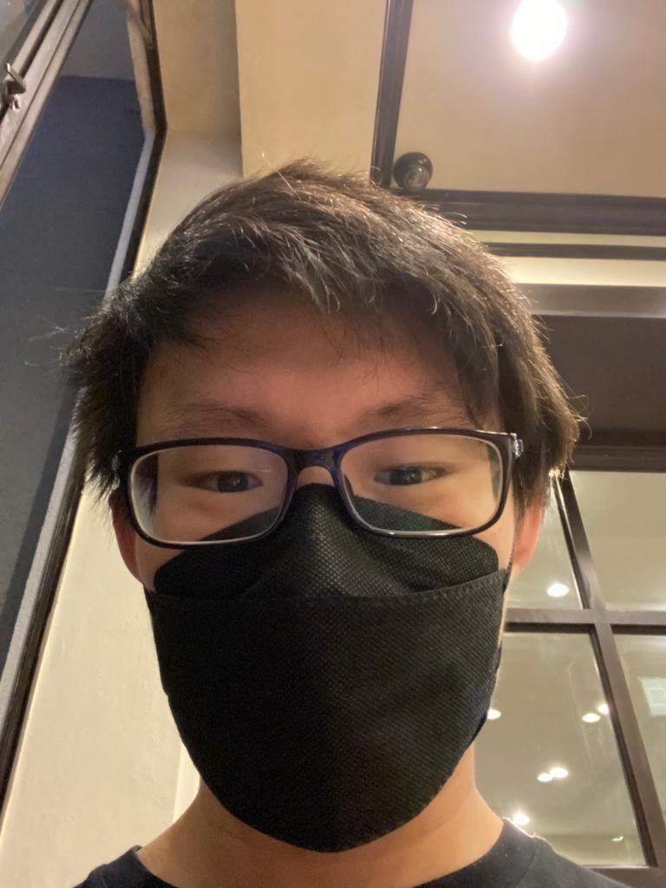

- This picture on top is my family. They mean everything to me,
we always try to include each other in everything, we go on trips together,
laugh together and also cry together too. I would do anything for my family.
- This is someone I would call my bestfriend, You could say she and I and quite 'special'.
Her and I have a bond like no other. we talk to each other, we share secrets, and also keep secrets